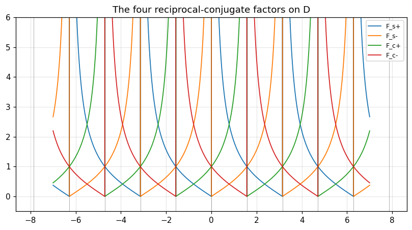
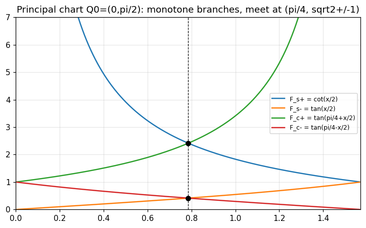
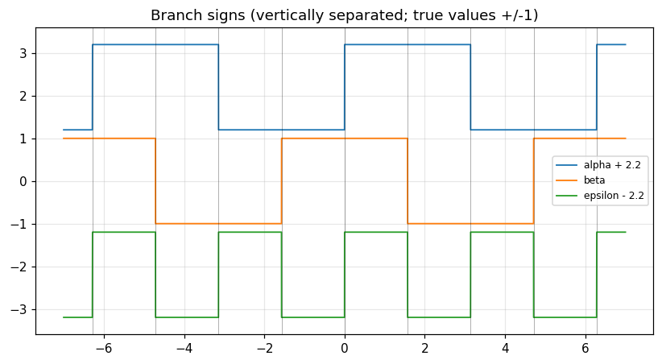
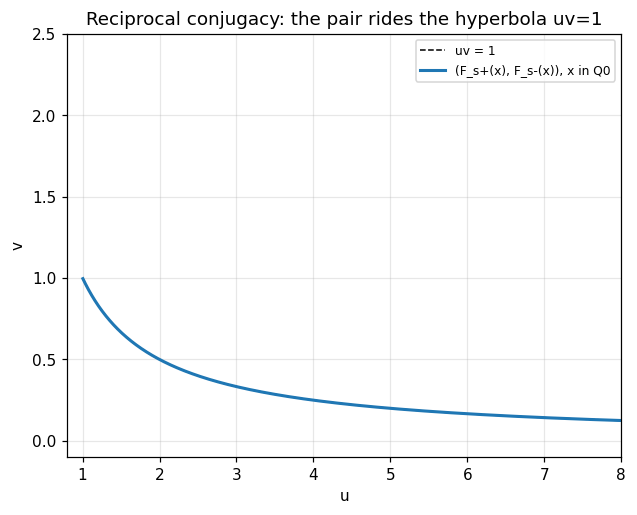
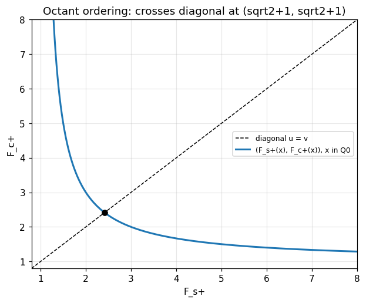
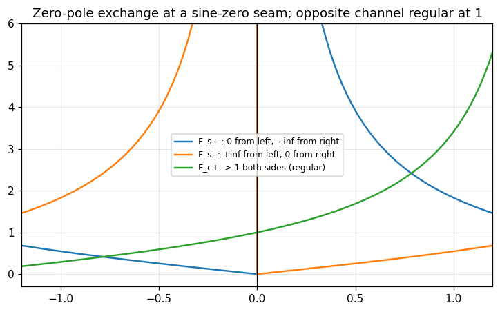
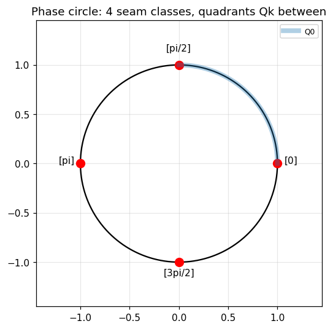

A restructured rewrite of Book 1 of R Theory — Volume I. Pictures and intuition first; the formal audit second. Every claim carries its status: P proved in text, S standard imported result, M manuscript assertion / stipulation, D definition.
Contents. I. See it first · II. Then earn it · III. Certification · IV. Close the book
Seven pictures. Each one is a theorem of Book 1 drawn before it is proved. The graphs below are live Desmos calculators (drag to pan, scroll to zoom); if Desmos cannot load, a static rendering appears instead.







The formal audit, section by section, condensed. Notation: τa(x) = x+a, ι(x) = −x, ιd(x) = π/2−x, Σ = {kπ/2}, D = ℝ∖Σ, Qk = (kπ/2,(k+1)π/2), Oj = (jπ/4,(j+1)π/4), mk = (2k+1)π/4, ξk(x) = x−kπ/2.
Book 1 freezes the Book 0 corpus M0–M4 as its source boundary (Declaration 1.I.D1) and fixes a proof-status grammar: inherited declaration, definition, lemma, theorem, corollary, extension/obstruction theorem, added axiom, physics import, projection contract, conjecture, empirical fit, retired claim — each with bracket domain tags [R],[D],[Q],[O],[C],[B],[S],[E] and a narrowest-valid-domain rule. P Status nonpromotion (1.I.T1), domain inheritance (T2), collision-cleanup neutrality (T3), and Book 1 formal isolation (T4) are proved. The no-smuggling rules R1–R5 are M constitutional stipulations — declared, not derived. Representation firewall: display dimension ≠ intrinsic dimension, enforced from here on.
The lifted phase line x ∈ ℝ (not physical time), translation group τa∘τb = τa+b P; the full-turn fiber theorem: (cos,sin) agree at x,y iff x−y ∈ 2πℤ P (ordinary trig periodicity S at the base step). Quotients 𝕋2π = ℝ/2πℤ and 𝕋π = ℝ/πℤ; the folding map κ([x]2π) = [x]π is two-to-one P. No deterministic recovery of the half-turn class from the π quotient (N1), nor of the lift from any periodic class (N2) P. Quarter-turn has order 4 on 𝕋2π but order 2 on 𝕋π P; the quotient-information firewall 1.II.T10 P. Descent of τa, ι, ιd to the quotients P.
Σs = {kπ}, Σc = {π/2+kπ}, alternating and disjoint, Σ = Σs ∪ Σc P. D = ℝ∖Σ is the largest common domain of tan, cot, sec, csc P; D = ⨆Qk, each Qk split by its midpoint into two octants P. Exact symmetry transport of seams, quadrants, and octants under τπ/2, τπ, ι, ιd P: e.g. ι(Qk) = Q−k−1, ιd(Qk) = Q−k. Four seam classes on 𝕋2π, two on 𝕋π P. Analytic seam ≠ physical discontinuity (N2) P — D9 carries no physical content, so none can leak through the seam.
α = sgn(sin x), β = sgn(cos x), ε = αβ = sgn(sin 2x), each ±1 and locally constant on quadrants P; |csc x| = α/sin x, |sec x| = β/cos x; sgn(tan x) = sgn(cot x) = ε P. Branch-explicit rational forms, e.g. |csc x|±cot x = (α±cos x)/sin x = (1±ε|cos x|)/|sin x| P. Exact conditions for dropping |·| (T11) P — and dropping it elsewhere changes the function (N2, witnesses x = 5π/4, 3π/4) P. Half-turn sends (α,β) → (−α,−β) while ε survives (T13) P; no π-periodic scalar recovers (α,β) (N3) P. Smoothness holds on each Qk separately (T12) P.
Neutral factors Fs± = |csc x|±cot x, Fc± = |sec x|±tan x on D: strictly positive P (envelope inequality via csc²−cot² = 1 S); reciprocal conjugacy Fs+Fs− = Fc+Fc− = 1 P; sum/difference reconstruction of 2|csc x|, 2cot x, etc. P. Unit-threshold classification: Fs+ > 1 ⇔ cot x > 0 (equality never occurs on D); "plus" labels the defining sum, not magnitude — on ε = −1 quadrants the plus factors lie in (0,1) P. Reflection conjugates ± within a channel (= inversion), complementary reflection swaps channels keeping ±, quarter-turn exchanges channel-conjugately P. π-periodicity with two proofs; descent to the admissible π quotient P. The quadruple is pairwise algebraically redundant with a one-dimensional common source P. Naming neutrality (T12) P: Book 2's naming will add no mathematics.
On Q0: Fs+ = cot(x/2), Fs− = tan(x/2), Fc+ = tan(π/4+x/2), Fc− = tan(π/4−x/2) P (standard half-angle/addition identities S). Ranges (1,∞)/(0,1), strict monotonicity (Fs+ decreasing, Fs− increasing, Fc+ increasing, Fc− decreasing on every Qk) P. Even quadrants reuse the principal formulas in ξk; odd quadrants use the swapped chart (T4/T5) — only two chart types, indexed by parity/ε P. Midpoint values Fs+(mk) = Fc+(mk) = √2+ε, minus-versions √2−ε P (cot(π/8) = √2+1 S). Octant ordering (T9) P. The principal package does not globalize (N1, x = 5π/4 witness) P.
Channel-natural domains Ds = ℝ∖Σs, Dc = ℝ∖Σc, D = Ds∩Dc P. Opposite-seam regular values are exactly 1 (T2) P — a removable omission, not a singularity. Own-channel seams: directional 0 ↔ +∞ exchange with no finite continuous extension (C4) P; extension does not commute with inversion (N1, a(x) = 1/x) P; a seam-safe composite never regularizes its constituents (C7) P. Uniqueness of continuous extension on dense sets is standard analysis S (T6). Split-boundary domain D̂ = ⨆Q̄k with directional copies b̂k± (superscripts = side, not sign); D̂/∼g ≅ ℝ P, but there is NO canonical raw crossing map b̂k− → b̂k+ (N2) P — any crossing law is extra structure. Gluing criterion: the regular channel glues at 1; the singular channel cannot glue finite (T11) P.
Four minimalities — display, generator, axiomatic, interpretive — pairwise non-equivalent (T1) P; "minimal" without a named task is meaningless. The four-factor curve Ek: Qk → ℝ⁴ has one-dimensional smooth image (T4) P: display 4, intrinsic local dimension 1. No continuous injective 𝕋 → ℝ (T5) P via standard circle topology S. Task factorization: χ preserves task u exactly iff u is constant on χ-fibers (T6) P; lossy can be task-sufficient (C8); more outputs cannot undo a prior noninjective compression (N1) P. Diffeomorphism preserves intrinsic manifold dimension S (T3). No universally minimal representation (T11) P; axiom-free ≠ assumption-free (T9); mathematical closure ≠ physical closure (T10) P.
Dependency order is acyclic, 1.I → … → 1.IX (T1) P; the no-smuggling theorem blocks eight invalid promotions — domain, branch, quotient, boundary, coordinate, dimensional, interpretive, source (T3) P (cases 6–8 rest on the declared rules). The constitution theorem collects 18 established items (T6) P; zero new axioms (T7), zero external imports (T8) P by ledger audit; the four factors possess all listed properties as theorems before Book 2 naming — pre-naming sufficiency (T9) P. Physical nonclosure: 14 things NOT derived (N1) P from absence of introduced structure. Section zero-counts and source-provenance claims are M bookkeeping/audit assertions. The airlock condition permits Book 2 naming as a purely definitional act.
Phase line with translation group; 2π/π quotients with proved information firewalls; seam set Σ with alternating decomposition; common domain D with quadrant/octant atlas and exact symmetry transport; branch signs with reconstruction formulas and loss tables; four positive reciprocal-conjugate factors with conjugacy, threshold, reflection/complementary/quarter-turn laws, π-periodicity; two chart types with ranges, monotonicity, midpoint values, octant ordering; boundary profiles with zero–pole exchange and gluing criterion; split-boundary domain with D̂/∼g ≅ ℝ; four minimalities distinguished; 1D intrinsic image of the four-factor curve; task-factorization criterion; no universal minimality. Statuses: proved in text unless marked S above.
No physical time, no dynamics, no operator names, no canonical orientation, no crossing law at seams, no 2π-branch recovery, no preferred lift, no physical chirality, no projection contract, no empirical content, no spacetime, no preferred representation, no canonical R-operator, no physics import of any kind. Book 1 is mathematically closed and physically uncommitted — that is the certification, not a gap.
Zero counts. New axioms: 0. External imports: 0. Projection contracts: 0. Canonical R-operator names: 0. Physical claims: 0.
Airlock. Book 2 may now name the factors — naming is definitional (1.V.T12, 1.IX.T9) and must inherit the absolute-valued global formulas; later derived signs (differences, FlatWave, carrier) are not fixed by Book 1. Nothing proved here selects a physical chirality, a preferred lift, or a spacetime. The mathematics is closed; the physics has not started.
Rewrite status: all pictured identities were re-verified numerically (reciprocal conjugacy, half-angle charts, midpoint values √2±1, threshold law, octant ordering, boundary limits, ε-lossiness) to ~1e-10 or better before drawing. Pictures illustrate proved statements; they are not the proofs.